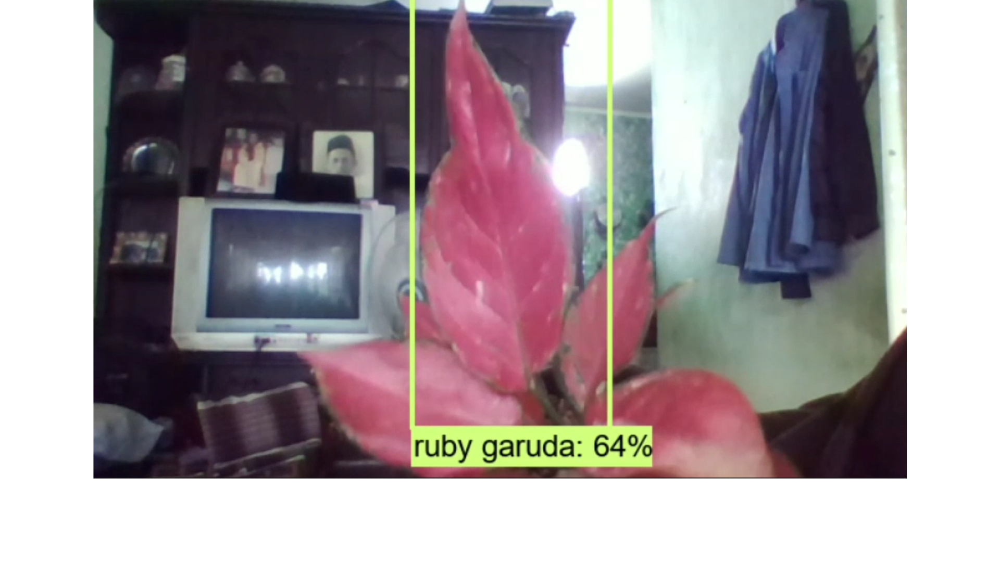

An object detection system developed to identify and classify various types of Aglaonema plants using image recognition technology.
The system is capable of distinguishing between visually similar and non-similar plant categories, including Ruby Garuda, Red Anjamani, Red Kochin, Claudia, and Siam Aurora, as well as non-Aglaonema plants.
This project was developed as a final thesis project as a requirement for graduation.
Independently developed the system